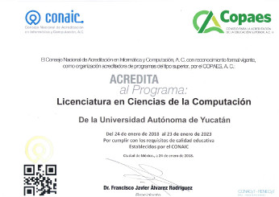

Licenciatura en
Ciencias de la Computación
Reconocimientos
Programa en Nivel 1 de CIEES

Programa Acreditado por el CONAIC
Objetivos
El propósito del plan de estudios de la Licenciatura en Ciencias de la Computación es: Formar profesionales competentes en el área de las Ciencias de la Computación para desarrollar y gestionar tecnología computacional; realizar actividades de investigación científica; diseñar e implementar software de base y software de aplicación, novedosos y eficientes; considerando la estructura, operación y necesidades de información de las organizaciones, con apego a la ética profesional y el servicio a la sociedad.
Informes
Facultad de Matemáticas Periférico Norte Tablaje 13615, Junto al local del FUTV. Telefónos: 942 31 40 al 49 Horario: 8:00 a 20:00 horas. http://www.matematicas.uady.mx/ Dr. Edgar Cambranes Martínez:edgar.cambranes@correo.uady.mx Coordinador de la Licenciatura en Ingeniería de Software